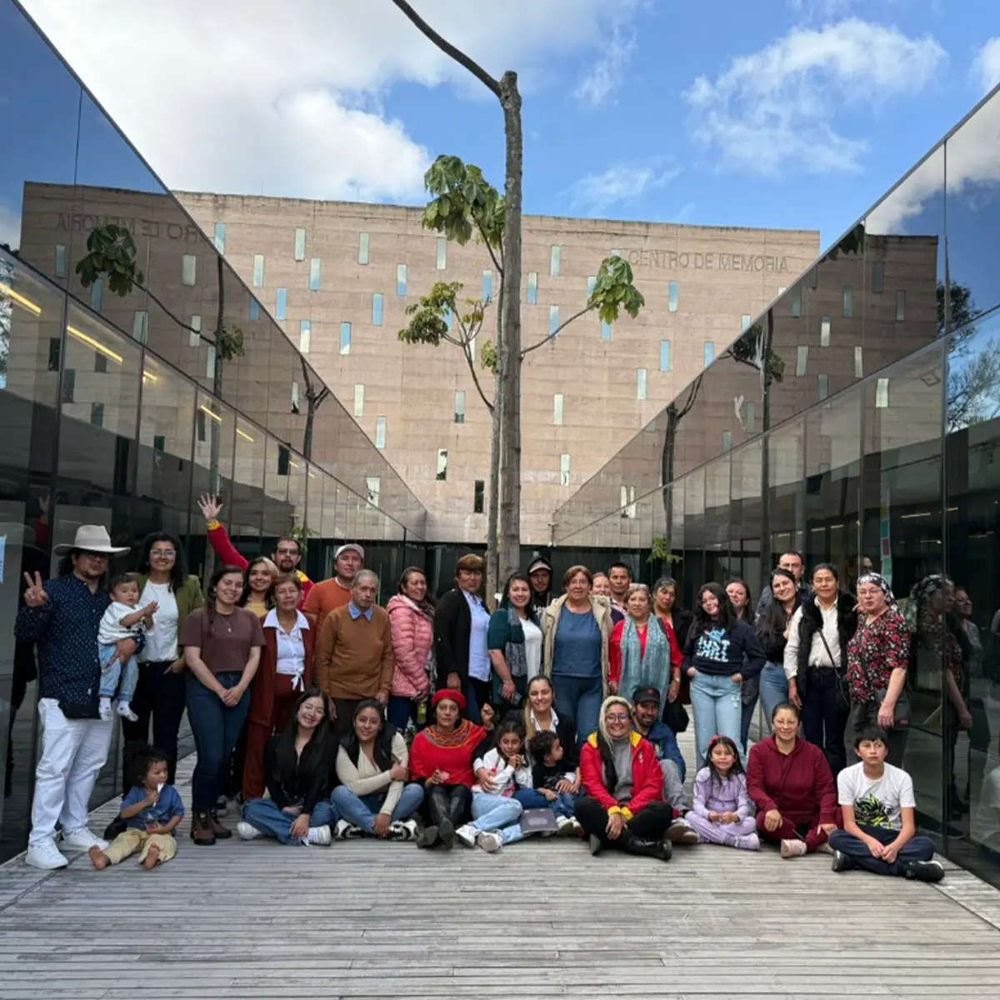

CMPR
CMPR, 21 de junio de 2025.
Los equipos de memoria y creación, junto con memorias territoriales, dieron a conocer el objetivo de las iniciativas, resaltando su carácter continuo y su configuración como proceso y no como simples actividades separadas. Todo hace parte de un tejido de acciones que alimenta la construcción de la Casa de la Memoria en Sumapaz.
